Project Background
HR Management System is a platform that provides an automated HR solution to help companies manage their employees. Companies may use the HR Management System to automatically compute employee wages based on attendance, Tax, leave deductions, overtime pay; manage employee databases; manage absences and leave;
The HR Management System is designed to be used online to make it easier for companies and employees to access it from anywhere and at any time. The key function to be developed in this system is
Attendance Tracking
Payroll Process
Employee Database Management
Employee Scheduling
Because of the rising complexity of HR operations, the need for workforce or employee management, and the desire for automation to boost efficiency, the HRMS industry has grown significantly. Rapid technological improvements, such as using cloud computing, artificial intelligence, and mobile access, have altered HRMS systems, making them more accessible and user-friendly.
Existing HRMS products in general have several features such as attendance management and payroll and benefit processing. But in general they can only be accessed on desktop applications or web applications. Furthermore, usually existing products can only be used by big companies and cannot be customized based on users' needs.
Business Context Diagram
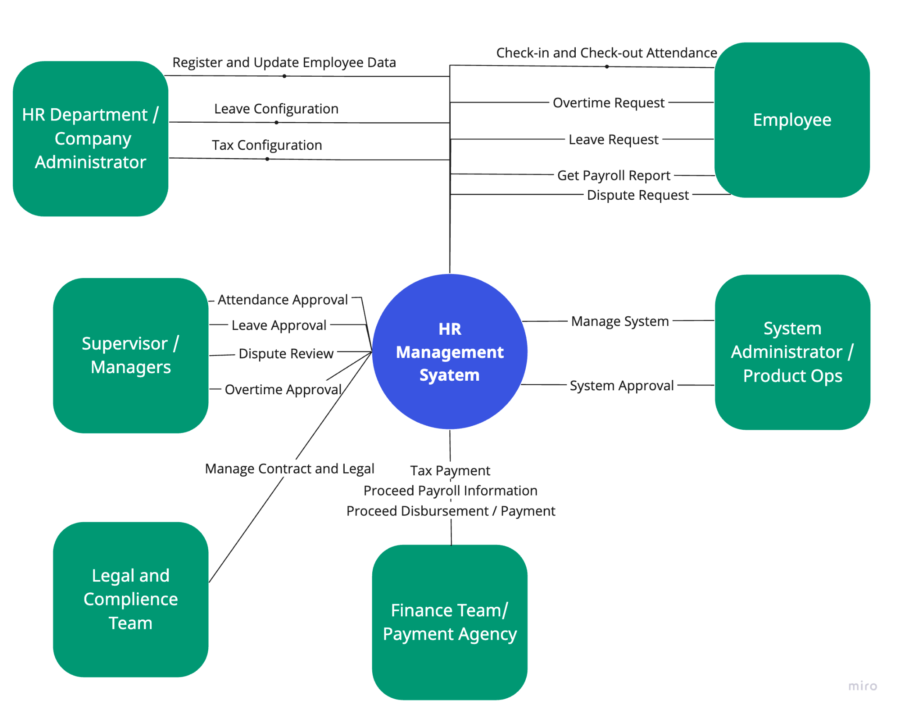
Stakeholder List
| Stakeholder | Description |
|---|---|
| Employee | Employees are crucial stakeholders in the HR management System. They can use and access the system to check-in and check-out attendance, request for overtime, request for leave, request dispute and access payroll information. |
| HR Department / Administrator | They use the system to register the employee to the system. They also can configure the leave balance and tax for each employee and update employee information |
| Managers / Supervisor | They use the system to approve request from their employee or subordinate |
| Legal and Compliance Team | They use the system to submit and manage employee contract and legal document |
| Finance or Payment Agency | They use the system to generate the payroll information and proceed the payment or disbursement. |
| System Administrator / Product Operations | They use the system to help the client or company who uses the system to manage and approve any request. |
Architectural Driver
Use Case Model
Use Case Diagram
Employee Data
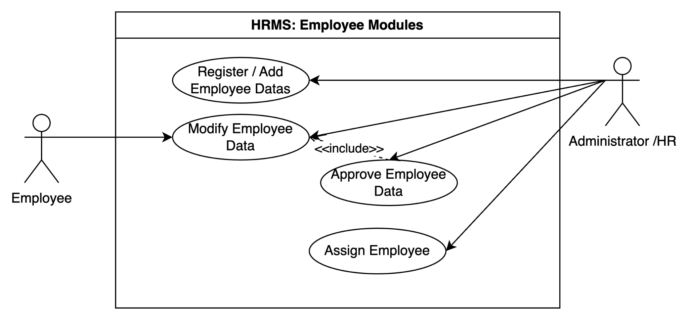
Shift
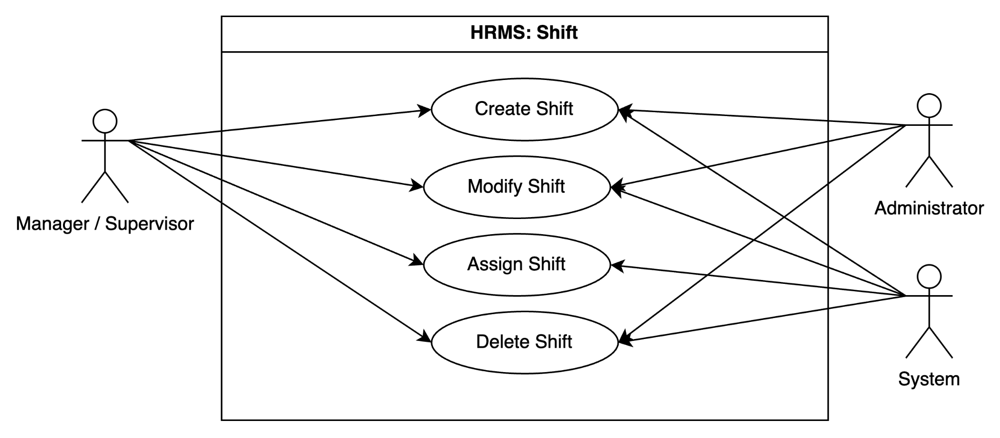
Attendance
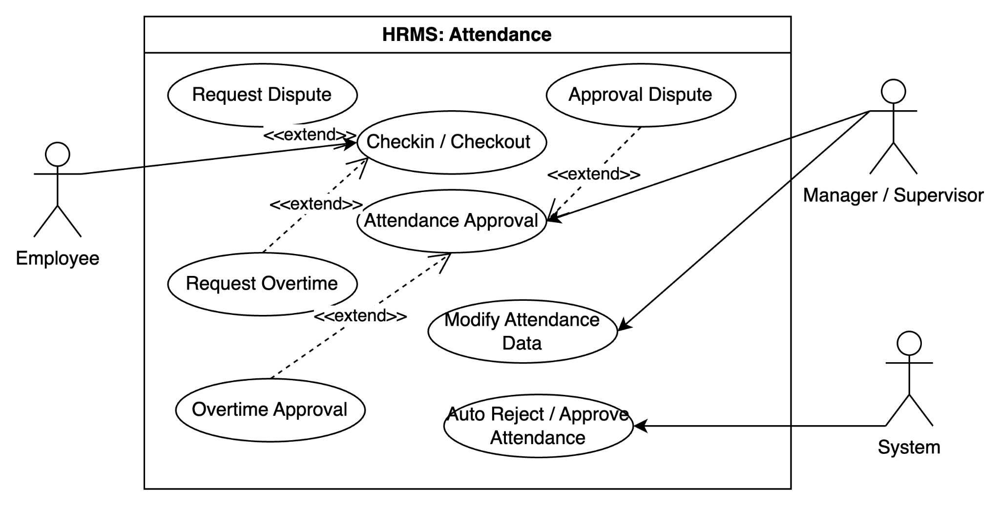
Payroll
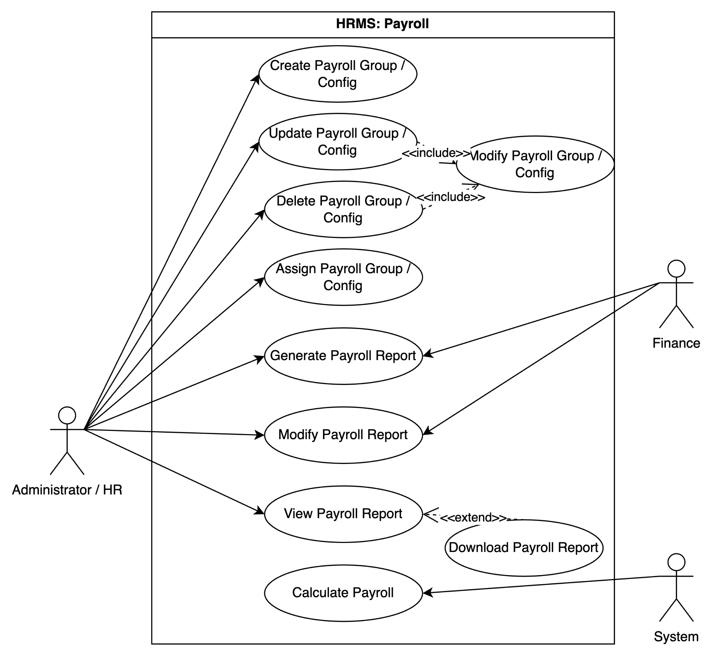
Disbursement
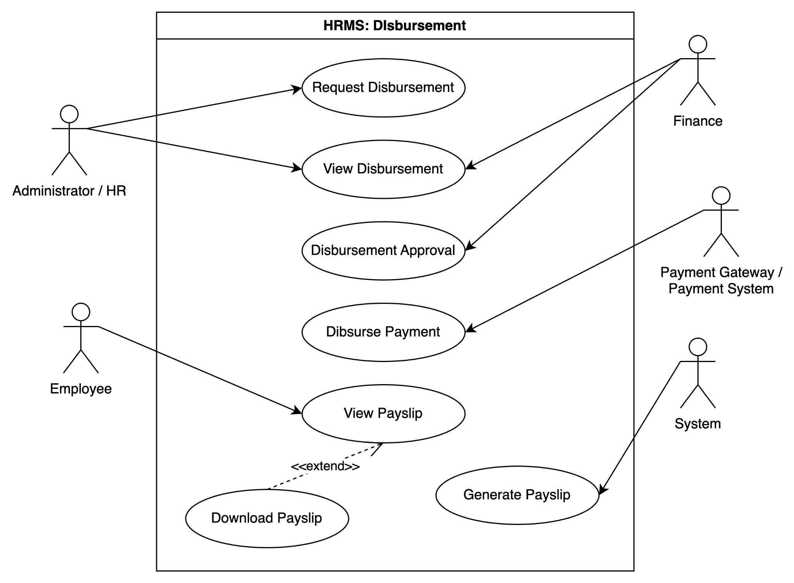
Actor List
| Name | Description |
|---|---|
| Administrator / HR | People from client company / HRMS company who responsible to handle administration of employee |
| Employee | Worker / Employee of the client company |
| Manager / Supervisor | Employee of the client company who manage their subordinate |
| Finance | Employee of the client company who responsible to handle payment or related to fee |
| System | HRMS |
| Payment Gateway | Third party system who handle the disbursement process (transfer salary) |
Use Case List
Employee Modules
| ID | Title | Description | Priority | Priority |
|---|---|---|---|---|
| ID | Title | Description | I | D |
| UC-ED-01 | Register / Add Employee Data | H | M | |
| UC-ED-02 | Modify Employee Data | M | M | |
| UC-ED-03 | Approve Employee Data Modification | M | M | |
| UC-ED-04 | Assign Employee | M | M |
Shift
| ID | Title | Description | Priority | Priority |
|---|---|---|---|---|
| ID | Title | Description | I | D |
| UC-S-01 | Create Shift | H | M | |
| UC-S-02 | Modify Shift | M | M | |
| UC-S-03 | Assign Shift | H | H | |
| UC-S-04 | Delete Shift | M | M |
Attendance
| ID | Title | Description | Priority | Priority |
|---|---|---|---|---|
| ID | Title | Description | I | D |
| UC-AT-01 | Checkin / Checkout | H | H | |
| UC-AT-02 | Attendance Approval | M | H | |
| UC-AT-03 | Modify Attendance | M | H | |
| UC-AT-04 | Auto Reject / Approve Attendance | M | M |
Payroll
| ID | Title | Description | Priority | Priority |
|---|---|---|---|---|
| ID | Title | Description | I | D |
| UC-PR-01 | Create Payroll Group/ Config | H | H | |
| UC-PR-02 | Update Payroll Group/ Config | M | H | |
| UC-PR-03 | Delete Payroll Group/ Config | M | M | |
| UC-PR-04 | Assign Payroll Group/ Config | H | M | |
| UC-PR-05 | Generate Payroll Report | H | M | |
| UC-PR-06 | Modify Payroll Report | M | M | |
| UC-PR-07 | View Payroll Report | L | M | |
| UC-PR-08 | Calculate Payroll Report | H | H |
Disbursement
| ID | Title | Description | Priority | Priority |
|---|---|---|---|---|
| ID | Title | Description | I | D |
| UC-DS-01 | Request Disbursement | H | M | |
| UC-DS-02 | View Disbursement | M | M | |
| UC-DS-03 | Disbursement Approval | M | M | |
| UC-DS-04 | Disburse Payment | H | H | |
| UC-DS-05 | View Payslip | L | L | |
| UC-DS-06 | Generate Payslip | L | L |
* I: Importance, D: Difficulty (high, medium or low)
UC-ED-01 Register / Add Employee Data
| Use case name | Use case name | Register employee |
|---|---|---|
| Actors | Actors | Administrator / HR |
| Pre-conditions | Pre-conditions | Administrator / HR register or add employee data |
| Flow of events | Normal case | 1. Employee can login and view their data 2. Managers / Supervisor can assign employee to specific shift |
| Flow of events | Alternative or fail case | Managers cannot assign employee to specific shift |
| Post-conditions | Post-conditions | Employee assign to shift or other data module |
UC-S-02 Create Shift
| Use case name | Use case name | Shift Creation |
|---|---|---|
| Actors | Actors | Administrator / HR / Manager / Supervisor |
| Pre-conditions | Pre-conditions | Manager / HR create shift |
| Flow of events | Normal case | 1. Shift display on system 2. Managers / Supervisor can assign employee to specific shift |
| Flow of events | Alternative or fail case | Managers cannot assign employee to specific shift |
| Post-conditions | Post-conditions | Shift can be assign to any employee |
UC-S-03 Assign Shift
| Use case name | Use case name | Shift Assignment |
|---|---|---|
| Actors | Actors | Manager / Supervisor |
| Pre-conditions | Pre-conditions | Manager / Supervisor assign shift to employee |
| Flow of events | Normal case | 1. Employee can see their shift 2. Employee can check in checkout |
| Flow of events | Alternative or fail case | Employee cannot checkin and checkout |
| Post-conditions | Post-conditions | Employee have schedule |
UC-AT-01 Checkin Checkout
| Use case name | Use case name | Checkin Checkout |
|---|---|---|
| Actors | Actors | Employee |
| Pre-conditions | Pre-conditions | Employee can check in and checkout |
| Flow of events | Normal case | 1. The attendance status change to waiting for approval 2. Managers / Supervisor can approve / reject the attendance |
| Flow of events | Alternative or fail case | Employee will mark as absent |
| Post-conditions | Post-conditions | Manager / Supervisor kan process the attendance approval |
UC-PR-01 Create Payroll Group / Config
| Use case name | Use case name | Payroll Group Creation |
|---|---|---|
| Actors | Actors | Administrator / HR |
| Pre-conditions | Pre-conditions | Administrator / HR create payroll group to config the payment calculation |
| Flow of events | Normal case | 1. Payroll group are register at system 2. HR can assign the payroll group to the employee |
| Flow of events | Alternative or fail case | System cannot calculate based on the configuration HR cannot assign the configuration to payroll group |
| Post-conditions | Post-conditions | HR can assign payroll group and system can calculate payroll based on configuration |
UC-PR-04 Assign Payroll Group/ Config
| Use case name | Use case name | Payroll Group Assignment |
|---|---|---|
| Actors | Actors | Administrator / HR |
| Pre-conditions | Pre-conditions | Administrator / HR assign payroll group to employee |
| Flow of events | Normal case | 1. System can calculate the payroll based on the configuration |
| Flow of events | Alternative or fail case | System cannot calculate based on the configuration |
| Post-conditions | Post-conditions | System can calculate payroll based on configuration |
UC-PR-05 Generate Payroll Report
| Use case name | Use case name | Generate Payroll Report |
|---|---|---|
| Actors | Actors | Administrator / HR / Finance |
| Pre-conditions | Pre-conditions | Administrator / HR / Finance generate payroll report |
| Flow of events | Normal case | 1. Administrator / HR / Finance can view payroll report 2. HR can request disbursement based on payroll report |
| Flow of events | Alternative or fail case | HR cannot request disbursement |
| Post-conditions | Post-conditions | Payroll report are registered on system and HR can request disbursement |
UC-DS-01 Request Disbursement
| Use case name | Use case name | Request Disbursement |
|---|---|---|
| Actors | Actors | Administrator / HR |
| Pre-conditions | Pre-conditions | Administrator / HR request disbursement |
| Flow of events | Normal case | 1. Employe get the payment after approval 2. Finance can process the payment |
| Flow of events | Alternative or fail case | Finance can pay the salary |
| Post-conditions | Post-conditions | Disbursement can be proceed after approval |
UC-DS-04 Disburse Payment
| Use case name | Use case name | Disburse Payment |
|---|---|---|
| Actors | Actors | System |
| Pre-conditions | Pre-conditions | System disburse the payment through payment gateway |
| Flow of events | Normal case | 1. Employee get the money |
| Flow of events | Alternative or fail case | Employe cannot get the salary |
| Post-conditions | Post-conditions | Salary transferred to employee |
Quality Attribute Scenario
QA Scenario List
| ID | Title | Type | Priority | Priority | Related Use Case |
|---|---|---|---|---|---|
| ID | Title | Type | I | D | Related Use Case |
| QA-01 | System can proceed 5000 employee creation with in 5 minutes | Performance | H | H | UC-ED-01 |
| QA-02 | Payment option can be adjusted through environment | Modifiability | H | H | UC-DS-04 |
| QA-03 | Employee can checkin and checkout 24 hour without failure | Availability | H | H | UC-AT-01 |
| QA-04 | System can disburse 1000 in a batch payment within 5 minutes without failure | Performance | H | H | UC-AT-01 |
| QA-05 | Employee can checkin and checkout with face ID | Correctness / Fault Tolerance | H | H | UC-AT-01 |
| QA-06 | HR / Finance can adjust the payroll only for specific case | Adaptability | H | H | UC-PR-06 |
* define at least 5 QAS (including 1 performance, 1 availability, 1 modifiability)
QA-01 Agent Creation
| QA Type | Performance |
|---|---|
| Description | Employee can proceed 5000 employee data creation within 5 minutes by bulk / single creation |
| Source of Stimulus | Employee |
| Stimulus | Employee data creation |
| Artifact | System |
| Environment | Under normal operation |
| Response | data created |
| Response Measure | within 5 minutes |
QA-02 Payment Option
| QA Type | Modifiability |
|---|---|
| Description | Payment option can be adjusted through environment |
| Source of Stimulus | Developer |
| Stimulus | Change payment option |
| Artifact | System |
| Environment | Production |
| Response | Modification can be proceed by modify env setup |
| Response Measure | within 1 hour |
QA-03 Checkin and Checkout
| QA Type | Availability |
|---|---|
| Description | Employee can checkin and checkout 24 hour without failure |
| Source of Stimulus | Employee |
| Stimulus | checkin and checkout process |
| Artifact | System |
| Environment | Under normal operation |
| Response | checkin and checkout can be proceed |
| Response Measure | 24 hour without downtime |
QA-04 Disbursement Process
| QA Type | Performance |
|---|---|
| Description | Finance disburse 1000 in a batch payment within 5 minutes without failure |
| Source of Stimulus | |
| Stimulus | Disburse payment |
| Artifact | System |
| Environment | Under normal operation |
| Response | disbursement can be proceed max 1000 payment in a batch |
| Response Measure | within 5 minutes without failure |
QA-05 Checkin and Checkout
| QA Type | Performance |
|---|---|
| Description | Employee can checkin and checkout with face ID |
| Source of Stimulus | Employee |
| Stimulus | checkin / checkout using face id |
| Artifact | System |
| Environment | Under normal operation |
| Response | checkin and checkout using face id succeed with low spec camera and low quality image. |
| Response Measure | image still can be validated even though on low light, low quality, employee wearing mask and glasses. |
QA-06 Payroll Adjustment
| QA Type | Adaptability |
|---|---|
| Description | HR / Finance can adjust the payroll only for specific case |
| Source of Stimulus | HR / Finance |
| Stimulus | payroll modification |
| Artifact | System |
| Environment | Under normal operation |
| Response | payroll can be adjusted based on user need on specific payroll |
| Response Measure | without modify the system, code or payroll group configuration |
Constraint
Business Constraint List
| ID | Title | Description |
|---|---|---|
| BC-01 | Pricing | Pricing competition can be adjust based on user need (monthly,yearly subscription, price based on headcount / product type) |
| BC-02 | Infrastructure / Device | Company capability to provide infrastructure / device need |
| BC-03 | Adaptability | Company needed can be provided by the system. Time availability when the system needs to be customized. |
| BC-04 | Legal | There are legal rules related to workers (minimum payment, maximum working hours etc.) |
Technical Constraint List
| ID | Title | Description |
|---|---|---|
| TC-01 | Compatibility | System can be access by all kind of device (computer through website, mobile application for mobile phone and Tablet / Ipad) |
| TC-02 | Compatibility | System can be access with low spec device |
| TC-03 | Accuracy | Face Detection should be accurate (95% accuracy) on low quality image / camera |
| TC-04 | Timezone | Company can easily use on all around the world (with different timezone) |
Top Level Design Description
Microservices Architecture: Domain Driven Design (DDD) Approach
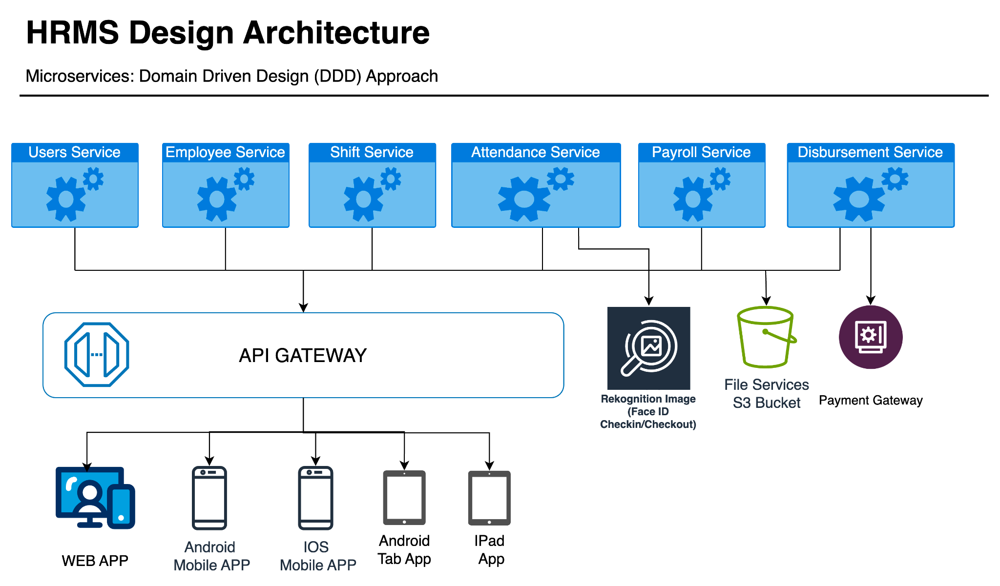
Design Decision List
* Design decisions should be cover all the QAs in Section 3. (3절에 명세한 모든 QA가 고려되도록 설계 결정을 내려야 한다.)
| ID | Title | Relevant Quality Attributes |
|---|---|---|
| DD-01 | Microservices Architecture | QA-01, QA-02,QA-03,QA-04, QA-06 |
| DD-02 | Relational Database (postgreSQL) | QA-02,QA-03, QA-04, QA-06 |
| DD-03 | AWS Image Rekognition | QA-05, |
| DD-04 | Authentication and Authorization (Role Based Access Control) | QA-05, QA-06 |
| DD-05 | Communication Protocols (REST- API) | QA-01, QA-04 |
| DD-06 | CI/CD (Docker, Jenkins) | QA-02 |
| DD-07 | Payment Gateway | QA-04 |
DD-01 Microservices Architecture
Design Goal
* describe why you defined this design decision. (본 설계 결정을 내린 이유를 설명하세요)
* describe the goal of this design decision. (본 설계 결정의 목표를 설명하세요)
* what is your strategies to satisfy QAs? (관련 QA를 달성할 전략이 무엇인가?)
The decision to adopt a microservices architecture is driven by the imperative need to address specific challenges related to scalability, maintainability, and flexibility in handling distinct functional areas of the system. In contrast to a monolithic architecture, where components are tightly integrated into a single application, microservices offer a more modular and distributed approach.
The primary goal is to enable the system to scale independently, facilitate ease of development, and enhance agility for future changes. By breaking down the system into smaller, independent services, each responsible for a specific business capability, we aim to achieve a more responsive and adaptable architecture.
The microservices architecture allows for the independent scaling of individual services based on their specific resource requirements, ensuring optimal performance and resource utilization. Each microservice will have its own configuration management, enabling dynamic adjustments without affecting the entire system. This enhances the system's flexibility and adaptability to changing requirements. Availability in a microservices architecture is crucial for maintaining seamless operation across distributed components. Microservices, while providing scalability and flexibility, also introduce challenges related to maintaining constant availability. Implementing effective strategies ensures that the system remains accessible and operational without significant disruptions.
Design Approach List
Monolithic Architecture
Describe Design approach #1
The applied design method, i.e., styles or tactics, will be explained. (적용한 설계 방법 즉 패턴, Tactics 등과 함께 설명한다.)
A monolithic architecture consolidates all components into a single, tightly-coupled application. This approach is characterized by a unified and centralized codebase, shared databases, and a single deployment unit. The architecture is akin to a cohesive, all-encompassing structure where all functionalities are tightly integrated.
The applied design method involves adopting a unified and compact structure. This design choice simplifies the deployment and management processes, as the entire application is treated as a cohesive unit. Development and maintenance are streamlined due to the shared codebase, but this approach may face challenges related to scalability and flexibility.
Microservices Architecture
Describe Design approach #2
The applied design method, i.e., styles or tactics, will be explained.
(적용한 설계 방법 즉 패턴, Tactics 등과 함께 설명한다.)
The microservices architecture disassembles the system into independently deployable and scalable services. Each microservice is dedicated to a specific business capability, possesses its own database, and communicates with other services through well-defined APIs. This approach fosters a decentralized structure, allowing for modularity and independence in deployment.
The applied design method emphasizes a decentralized structure, facilitating modularity and independent deployment of microservices. This design choice enhances scalability, adaptability, and fault isolation. The use of well-defined APIs enables seamless communication between microservices, allowing for parallel development and deployment. However, managing the complexity introduced by the distributed nature of microservices requires robust orchestration and communication mechanisms.
Decision and Rationale
Describe the rationale for selecting the most appropriate Design Approach from among the proposed Design Approach. (제시된 Design Approach들 중에서 가장 적합한 Design Approach를 선정하는 근거를 기술한다.)
For each design approach, provide pros and cons of all QAs related to the design goal. (각 Design Approach 별로 Design Goal과 관련된 모든 QA에 대해 장/단점을 제시하라.)
The microservices architecture (Design Approach #2) is selected to fulfill the design goal and address the challenges identified. This decision is grounded in the recognition that a monolithic architecture may face limitations in terms of scalability, maintainability, and adaptability. Microservices offer a more flexible and scalable approach, aligning with modern software architecture trends. The decentralized nature of microservices supports independent development and deployment, contributing to enhanced agility.
| Quality Attribute | Quality Attribute | Analysis | Design Approach (DA) #1 Monolithics | Design Approach (DA) #2 Microservices (Selected) |
|---|---|---|---|---|
| ID | Title | Analysis | Design Approach (DA) #1 Monolithics | Design Approach (DA) #2 Microservices (Selected) |
| QA-01 | System can proceed 5000 employee creation with in 5 minutes | Pros | Simplified deployment and management. | Scalable, allowing independent scaling of microservices. With its scalable nature, can distribute the load among microservices, potentially meeting the specified requirement. |
| QA-01 | System can proceed 5000 employee creation with in 5 minutes | Cons | Limited scalability due to a single codebase. May struggle to handle the creation of 5000 employees within 5 minutes due to its limited scalability. | Increased complexity in managing distributed components needs to be addressed. |
| QA-02 | Payment option can be adjusted through environment | Pros | Centralized configuration management. | Allows independent adjustment of environment variables, providing greater configurability. |
| QA-02 | Payment option can be adjusted through environment | Cons | Limited flexibility for environment variable adjustments. | Increased operational overhead |
| QA-03 | Employee can checkin and checkout 24 hour without failure | Pros | N/A | Improved fault isolation; failures in one microservice don't affect others. |
| QA-03 | Employee can checkin and checkout 24 hour without failure | Cons | Limited fault isolation; a failure may affect the entire system. | Increased complexity in monitoring and managing distributed services. |
| QA-04 | System can disburse 1000 in a batch payment within 5 minutes without failure | Pros | N/A | Can distribute the payment processing load among microservices, potentially meeting the specified requirement. |
| QA-04 | System can disburse 1000 in a batch payment within 5 minutes without failure | Cons | Limited scalability may impact the ability to disburse 1000 payments | Increased complexity; effective orchestration required to manage distributed payments. |
| QA-06 | HR / Finance can adjust the payroll only for specific case | Pros | N/A | Allows independent adjustment of payroll for specific cases. |
| QA-06 | HR / Finance can adjust the payroll only for specific case | Cons | Limited flexibility for adjusting payroll only for specific cases. | Increased operational overhead in managing specific adjustments across multiple microservices. |
DD-02 Relational Database
Design Goal
* describe why you defined this design decision. (본 설계 결정을 내린 이유를 설명하세요)
* describe the goal of this design decision. (본 설계 결정의 목표를 설명하세요)
* what is your strategies to satisfy QAs? (관련 QA를 달성할 전략이 무엇인가?)
The decision to adopt a relational database is rooted in the need for a structured and organized data storage solution. This choice is grounded in the recognition that relational databases offer a proven model for ensuring data integrity, supporting complex queries, and managing relationships effectively. The structured nature of relational databases provides a reliable foundation for organizing and storing data in a way that facilitates both efficient querying and relationship management.
The goal is to ensure data integrity by utilizing relational databases to enforce constraints and relationships between entities. Implementation strategies include primary keys, foreign keys, and constraints to prevent inconsistencies. Support complex queries by optimizing the database schema and designing normalized tables. Establish scalability by implementing a distributed relational database architecture and optimizing performance for horizontal scalability. Allow controlled adjustments to data, such as in payroll management, by designing the database schema and implementing role-based access controls.
Design Approach List
Design Approach #1 Description: Non-Relational Database (MongoDB)
Describe Design approach #1
The applied design method, i.e., styles or tactics, will be explained. (적용한 설계 방법 즉 패턴, Tactics 등과 함께 설명한다.)
This design approach leverages MongoDB, a NoSQL database system, known for its flexibility, scalability, and ability to handle unstructured or semi-structured data. MongoDB follows a document-oriented data model, storing information in flexible BSON (Binary JSON) documents. The architecture supports horizontal scalability through sharding, allowing distribution of data across multiple servers.
The applied design method focuses on flexibility, scalability, and adaptability to dynamic data structures. MongoDB's document-oriented approach allows for the storage of diverse data types and evolving schemas. The distributed architecture, combined with horizontal scalability and a flexible schema, positions MongoDB as a suitable choice for applications with changing requirements and large-scale data processing needs. The emphasis is on accommodating varying data structures and providing a scalable solution for distributed environments.
Design Approach #2 Description: Relational Database (PostgreSQL)
Describe Design approach #2
The applied design method, i.e., styles or tactics, will be explained.
(적용한 설계 방법 즉 패턴, Tactics 등과 함께 설명한다.)
The chosen design approach leverages a traditional relational database model with PostgreSQL, a robust open-source relational database management system (RDBMS). In this architecture, data is stored in tables with predefined structures, relationships, and constraints. PostgreSQL adheres to the principles of the ACID properties, ensuring transactional consistency and reliability.
The Relational Database (PostgreSQL) design approach provides a reliable and structured foundation for applications with well-defined data relationships and complex querying needs. It prioritizes data integrity and consistency, making it suitable for scenarios where a relational model aligns with the nature of the data and application requirements.
The applied design method emphasizes a structured, normalized schema, ACID transactions, and SQL querying within a centralized server architecture. These tactics ensure data integrity, consistency, and reliability, making PostgreSQL a suitable choice for applications with well-defined data structures and complex relationships. The focus is on maintaining a robust and predictable environment for data storage, retrieval, and management.
Decision and Rationale
Describe the rationale for selecting the most appropriate Design Approach from among the proposed Design Approach. (제시된 Design Approach들 중에서 가장 적합한 Design Approach를 선정하는 근거를 기술한다.)
For each design approach, provide pros and cons of all QAs related to the design goal. (각 Design Approach 별로 Design Goal과 관련된 모든 QA에 대해 장/단점을 제시하라.)
The decision to adopt a relational database (PostgreSQL) is grounded in the need for a structured and organized data storage solution, recognizing the proven model of relational databases in ensuring data integrity, supporting complex queries, and managing relationships effectively. The structured nature of relational databases provides a reliable foundation for organizing and storing data efficiently.
| Quality Attribute | Quality Attribute | Analysis | Design Approach (DA) #1 Non-Relational (MongoDB) | DA #2 Relational Database (PostgreSql) (Selected) |
|---|---|---|---|---|
| ID | Title | Analysis | Design Approach (DA) #1 Non-Relational (MongoDB) | DA #2 Relational Database (PostgreSql) (Selected) |
| QA-02 | Payment option can be adjusted through environment | Pros | NoSQL databases like MongoDB can adapt to environmental changes without a predefined schema, providing flexibility in payment option adjustments. | Relational databases enforce data integrity through constraints, reducing the risk of inconsistencies when adjusting payment options. PostgreSQL's structured schema allows for organized and controlled adjustments to payment options. |
| QA-02 | Payment option can be adjusted through environment | Cons | Flexibility might compromise strict data integrity, and adjusting payment options could pose challenges in maintaining consistency. Adjusting payment options through environment variables may result in more complex queries compared to traditional relational databases. | Adjusting payment options might require modifying the schema, potentially causing downtime or complexity in implementation. |
| QA-03 | Employee can checkin and checkout 24 hour without failure | Pros | N/A | PostgreSQL's adherence to ACID properties ensures transactional consistency, reducing the risk of failures during check-in/check-out. |
| QA-03 | Employee can checkin and checkout 24 hour without failure | Cons | Ensuring consistency across distributed nodes may require careful design to prevent failures or delays in check-in/check-out processing. | N/A |
| QA-04 | System can disburse 1000 in a batch payment within 5 minutes without failure | Pros | MongoDB's distributed nature and horizontal scalability may enhance throughput, supporting quick batch processing. | PostgreSQL's ACID properties enhance the reliability of batch payment transactions. Complex batch payment processes can be managed with structured SQL queries, ensuring transactional consistency. |
| QA-04 | System can disburse 1000 in a batch payment within 5 minutes without failure | Cons | Complex transactions involved in batch processing may be more challenging to manage compared to relational databases. | Centralized processing might pose challenges in handling high-throughput batch payments within strict time constraints. |
| QA-06 | HR / Finance can adjust the payroll only for specific case | Pros | N/A | PostgreSQL's structured nature facilitates the creation of a comprehensive audit trail for payroll adjustments. |
| QA-06 | HR / Finance can adjust the payroll only for specific case | Cons | Implementing precise access controls is crucial to avoid unauthorized adjustments, requiring careful design and monitoring. Ensuring a comprehensive audit trail for specific payroll adjustments may require additional considerations. | Adjustments in the schema for specific cases may require careful planning and execution, potentially causing downtime. |
Structural View
Structural Model
C&C Diagram
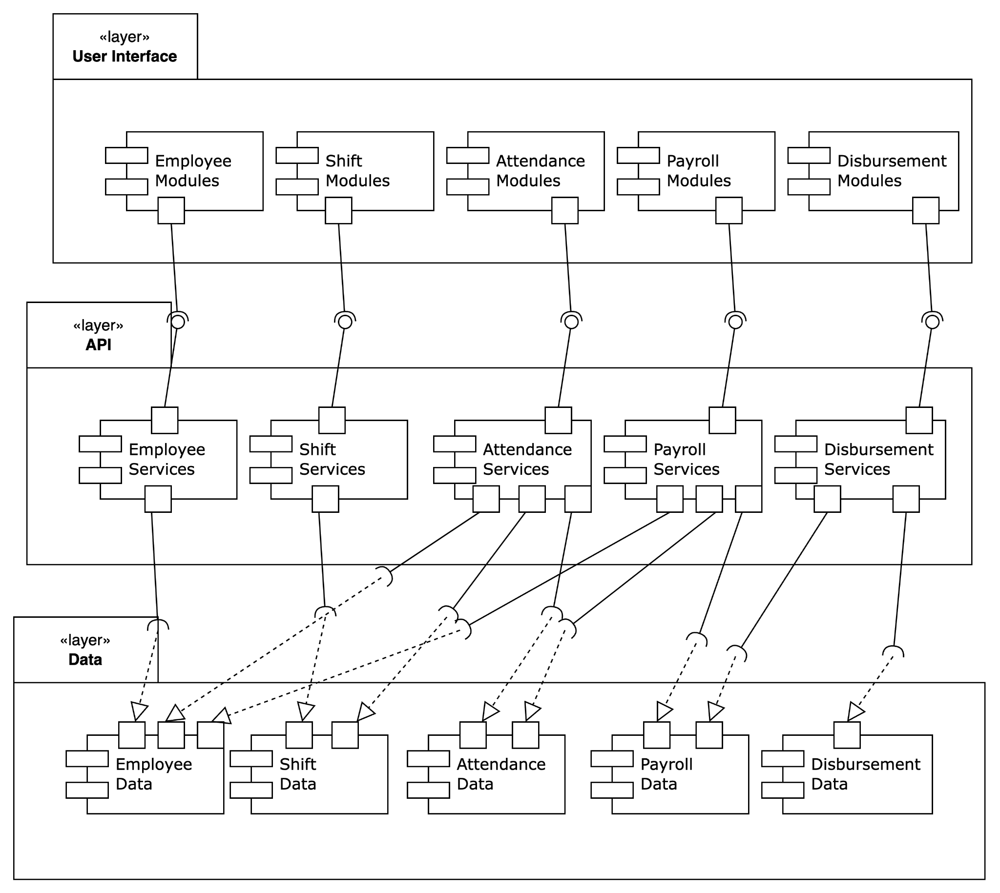
Element List
| Name | Responsibility | Relevant ADs |
|---|---|---|
| Layer User Interface | The User Interface layer is the outermost layer that interacts directly with end-users. Its primary responsibility is to present information to users in a human-readable format and to capture user inputs. | - |
| Layer API | The API layer acts as an intermediary between the User Interface and the Database layers. It is responsible for processing requests from the UI, performing business logic, and interacting with the database to retrieve or update data. | |
| Layer Database | The Database layer is responsible for storing, retrieving, and managing the persistent data used by the application. It ensures data integrity, consistency, and availability. |
Design Rationale
The microservices architecture is chosen to achieve improved scalability, maintainability, and flexibility in handling distinct functional areas. Therefore, every module, service, and database is maintained independently. However, the service still needs to access a multi database due to business need to provide data needed for example, the attendance service needs to access employee and shift databases. Even so, the system still isolate from other service because it will deploy independently to reduce coupling and possibility crash due to other services issues
Behavior (scenario) View
UC-01 General Use Case Scenario Model
Sequence Diagram
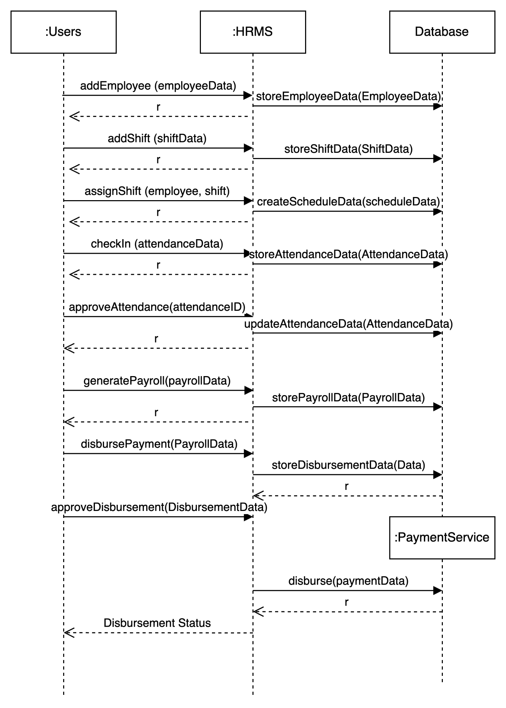
UC-02 Failed Check in With Dispute
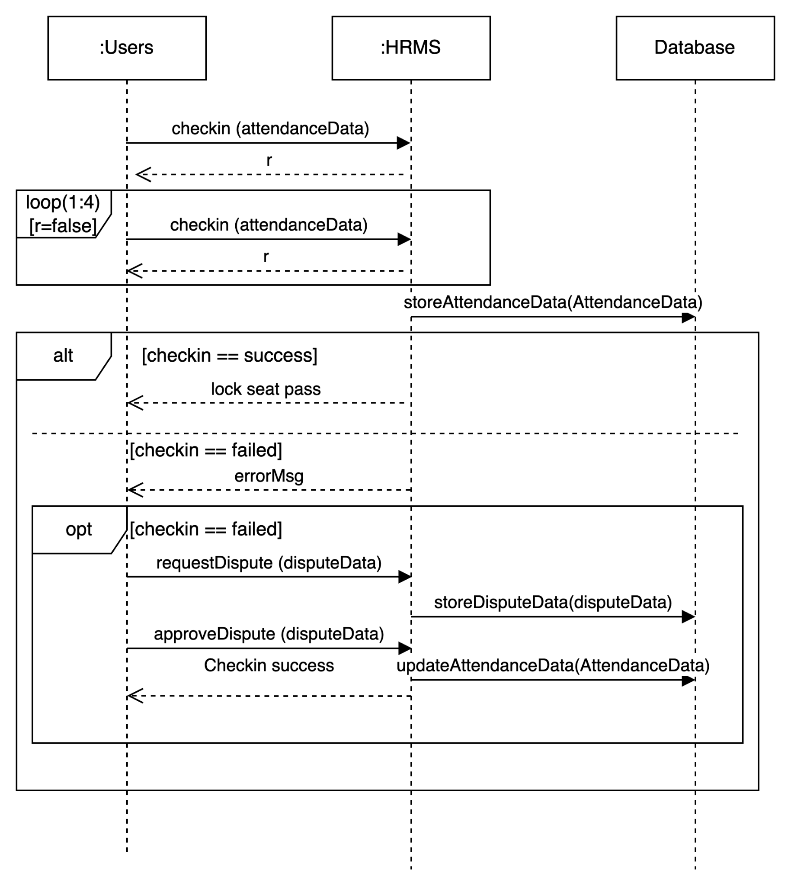
UC-03 Disbursement Process
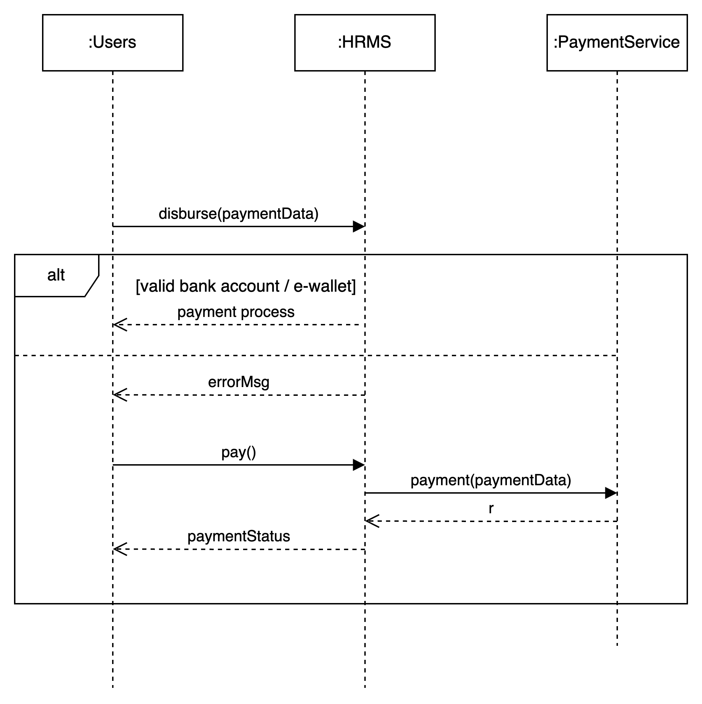
Allocation View
Allocation Diagram
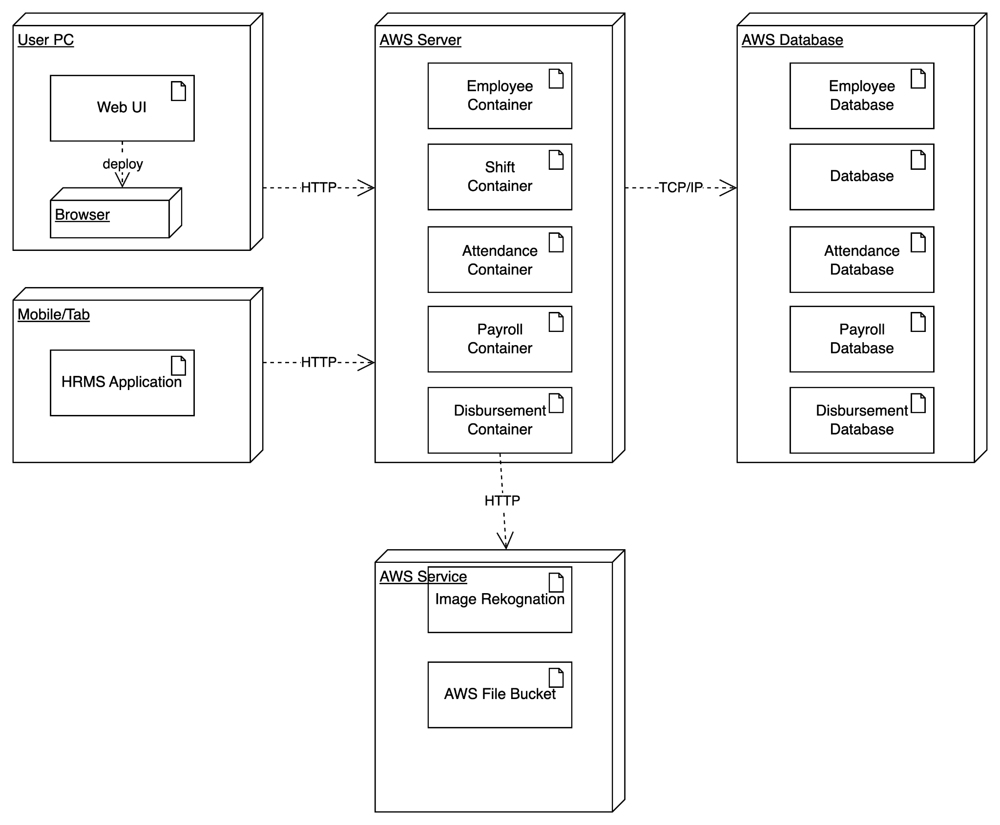
Design Rationale
Designing services as independent containers offers several compelling advantages rooted in the principles of containerization and microservices architecture. One primary rationale is the emphasis on isolation and independence. By encapsulating each service within its own container, the impact of changes or issues within one service is contained, ensuring the robustness of the entire system. This design approach also facilitates scalability, allowing services to be horizontally scaled to handle increased loads. Containers seamlessly integrate into continuous integration and deployment (CI/CD) pipelines, enabling automated testing, building, and deployment processes, resulting in faster release cycles and consistent runtime environments.
Portability is another key benefit, as containers encapsulate applications and dependencies, making them highly portable across various environments and cloud providers. Additionally, the resource efficiency of containers, sharing the host OS kernel and resources, contributes to optimized resource utilization and faster provisioning. The fault isolation provided by containerization ensures that service failures are contained within their respective containers, preventing cascading failures across the system. Furthermore, deploying services as independent containers aligns well with the principles of microservices architecture, fostering a modular and flexible system where each service can be developed, tested, and deployed independently, promoting agility and adaptability to changing business requirements. Overall, this design choice enhances maintainability, scalability, and the overall efficiency of modern application environments.